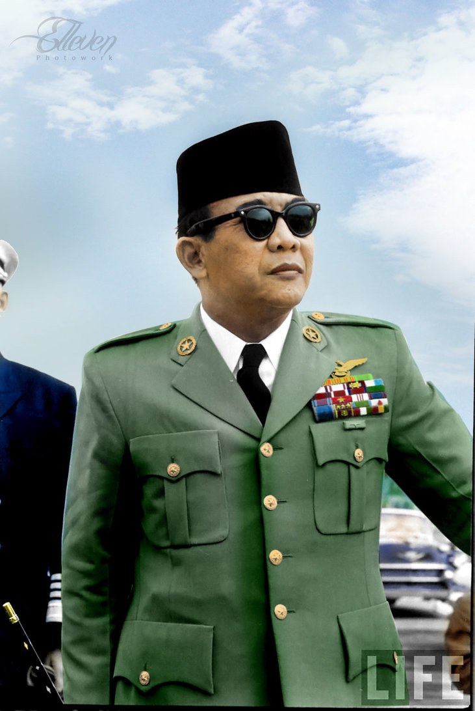
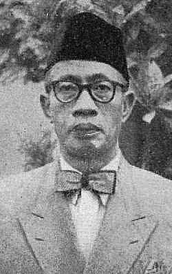

Pembentukan Tiga Panitia Kerja (11 Juli 1945)
Pada Sidang BPUPKI Kedua tanggal 11 Juli 1945, untuk mempercepat kerja penyusunan perangkat negara merdeka secara efektif dan terorganisasi, BPUPK membentuk Tiga Panitia Kerja Khusus:

Panitia Perancang UUD
Ketua: Ir. Sukarno
Beranggotakan 19 tokoh bangsa yang bertugas membahas dan menyepakati rancangan garis besar UUD.

Panitia Pembelaan Tanah Air
Ketua: Abikoesno Tjokrosoejoso
Bertugas merancang strategi pertahanan, militer, dan keamanan wilayah negara Indonesia merdeka.

Panitia Keuangan & Ekonomi
Ketua: Drs. Mohammad Hatta
Bertugas merancang sistem moneter, perbendaharaan, perpajakan, dan kesejahteraan ekonomi rakyat.
Panitia Hukum Dasar & Panitia Kecil (Tim 7)
Panitia Hukum Dasar yang dipimpin oleh Ir. Sukarno beranggotakan 19 tokoh penting bangsa, di antaranya: Mr. A.A. Maramis, Otto Iskandar Dinata, Prof. Dr. Soepomo, Mr. Achmad Soebardjo, H. Agus Salim, K.H. Wahid Hasjim, Ny. Maria Ulfah Santoso, dan Mr. Latuharhary.
Pembentukan Panitia Kecil Perancang UUD (Sore, 11 Juli 1945)
Pada sore hari 11 Juli 1945, Panitia Hukum Dasar menunjuk sebuah Panitia Kecil (Tim 7) yang diketuai oleh ahli hukum tata negara Prof. Dr. Soepomo. Tim 7 inilah yang diberi mandat merancang teks batang tubuh (pasal demi pasal) UUD dalam batas waktu kerja dua hari.
Susunan Lengkap Anggota Panitia Kecil (Tim 7):
Ketua Tim 7
Prof. Dr. Soepomo
Anggota
Mr. K.R.M.T. Wongsonegoro
Anggota
Mr. Achmad Soebardjo
Anggota
Mr. A.A. Maramis
Anggota
Dr. Soekiman
Anggota
H. Agus Salim
Jangan Tertukar! Dua Panitia Kecil BPUPK
Panitia Kecil (Panitia 8 / Panitia 9)
Ketua: Ir. Sukarno
Waktu: Sidang I BPUPKI (1 Juni 1945)
🎯 Tugas Pokok: Menampung usulan anggota & merumuskan Dasar Negara (melahirkan Piagam Jakarta).
Panitia Kecil Perancang UUD (Tim 7)
Ketua: Prof. Dr. Soepomo
Waktu: Sidang II BPUPKI (11 Juli 1945)
🎯 Tugas Pokok: Merancang teks Batang Tubuh (Pasal demi Pasal) UUD selama 2 hari kerja.
Hierarki Pembagian Panitia Kerja BPUPK
Panitia Hukum Dasar
Ketua: Ir. Sukarno
Panitia Kecil (Tim 7)
Ketua: Prof. Dr. Soepomo
Tugas: Batang Tubuh UUD
Panitia Pembelaan Tanah Air
Ketua: Abikoesno Tjokrosoejoso
Tugas: Pertahanan & Keamanan Negara
Panitia Keuangan & Ekonomi
Ketua: Drs. Moh. Hatta
Tugas: Perekonomian & Keuangan
Ir. Sukarno
Ketua Panitia Hukum Dasar
Prof. Dr. Soepomo
Ketua Tim 7 Perancang UUD
Drs. Moh. Hatta
Ketua Panitia Keuangan
Abikoesno T.
Ketua Panitia Pertahanan
Melengkapi Tabel Panitia Perancang UUD
Lengkapi tabel perbandingan antara Panitia Hukum Dasar dan Panitia Kecil (Tim 7) Perancang UUD dengan memilih opsi yang benar pada setiap kolom dropdown di bawah ini:
| Parameter Perbandingan | Panitia Hukum Dasar (Utama) | Panitia Kecil Perancang UUD (Tim 7) |
|---|---|---|
| 1. Ketua Panitia | ||
| 2. Jumlah Anggota | ||
| 3. Waktu Pembentukan | ||
| 4. Tugas Pokok |